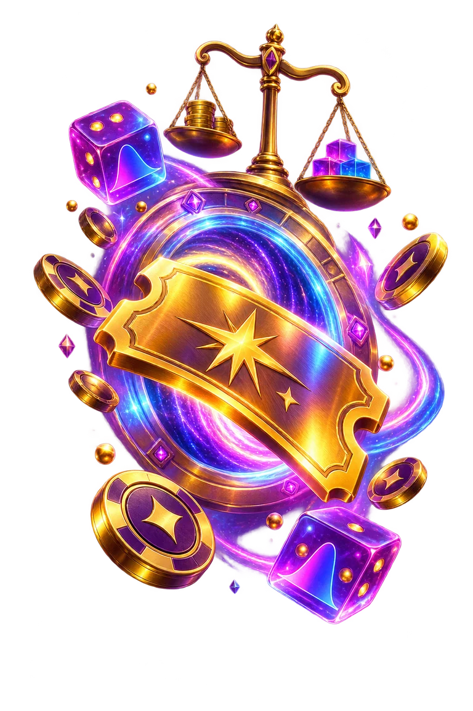
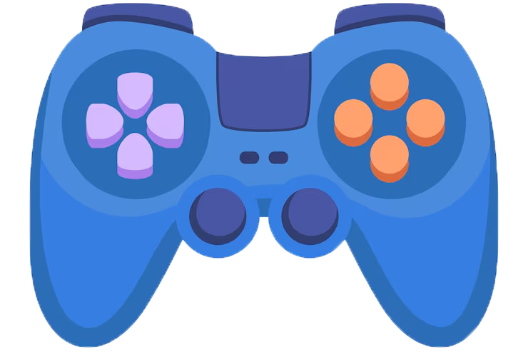
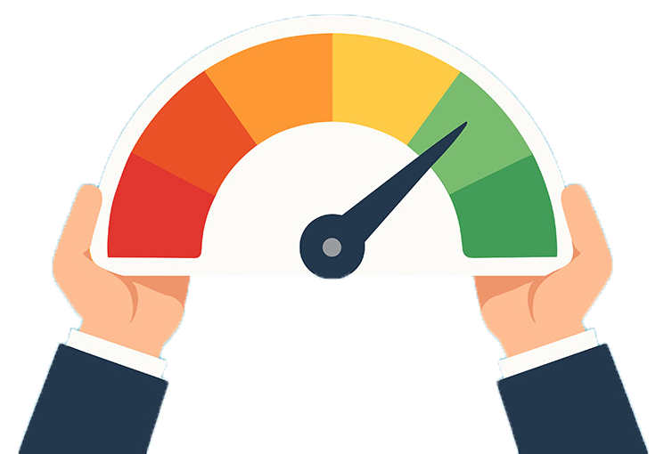
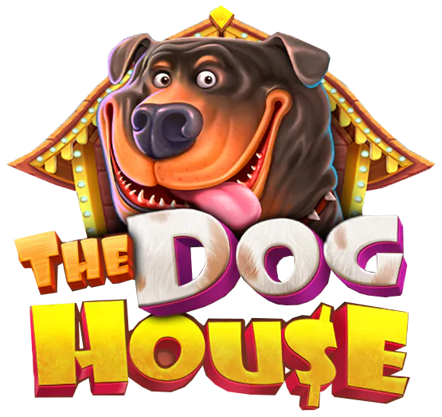
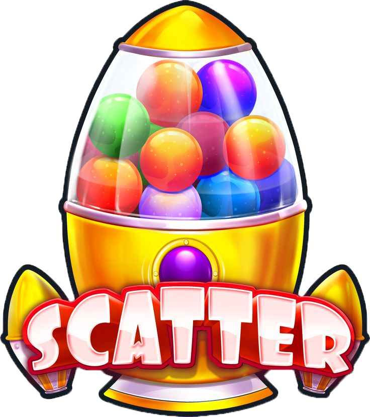

Articles on the mathematics of game mechanics

Bonus Buy in Slots: RTP, Price and Risk
What 100× really costs, when feature RTP differs, and why the shortcut can become a balance speedrun.
Read the article →Roulette odds explained: bets, payouts, zero, and the Martingale trap
A clear bet table, European vs American wheels, zero, expected value, and the Martingale trap.
Read the article →
Provably Fair and RNG: how to verify a game result
Server seed, client seed, nonce, and SHA-256 without the crypto fog—learn what a verifier proves after a heater or a brutal bust.
Read the article →
Slot RTP Explained: Why 96% Does Not Come Back Right Away
The formula, short-session variance, common myths and a hands-on virtual experiment.
Read the article →
The Dog House — a review of Pragmatic's most classic slot!
A hands-on look at 20 paylines, ×2 and ×3 kennel Wilds, free spins and proper old-school doggo chaos.
Read the article →
Sugar Rush 1000 — one of Pragmatic Play’s legendary games!
A personal look at the 7×7 grid, tumbles, sticky multipliers, free spins, and candy-coated chaos.
Read the article →Zeus vs Hades — Pragmatic Play Slot Review
A lively Zeus vs Hades review covering Olympus and Hades volatility, RTP, expanding Wild multipliers and free spins.
Read article →Sweet Bonanza — Online Slot by Pragmatic Play
Tumble wins, RTP, four bonus lollipops, free-spin multipliers and the Double Chance option — explained without the sugar coating.
Read article →Why High Volatility Doesn't Guarantee a Win
We break down how volatility differs from win probability, and why a wide spread of outcomes isn't the same as high odds.
Read the article →Independent Lab Certification of Games
What labs like GLI, eCOGRA and iTech Labs actually check, why RNG audits matter, and how to tell a verified math model from unverified claims.
Read the article →Online Gambling Legality: Central Asia, Argentina, Indonesia
An up-to-date overview of legislation by country: what's legal, what's banned, who regulates the industry, and what penalties apply.
Read the article →Can You Win at an Online Casino? What the Math Says
An honest breakdown: house edge, why the platform stays ahead over time, whether betting “systems” actually work, and how to decide wisely.
Read the article →Gates of Olympus — How Multipliers Work
A clear look at Tumble, high volatility, combined multipliers and the difference between x500 and the x5000 maximum win.
Read article →How the math behind game mechanics works
We break down volatility, RTP and bonus round structure in plain language — with no ties to specific operators and no real-money wagering.
Read article →All games
All available educational simulators in one place.